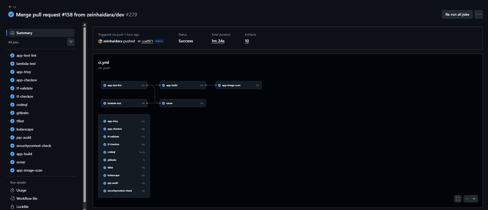
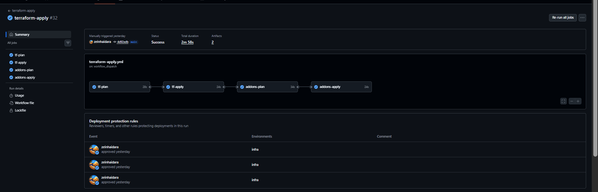
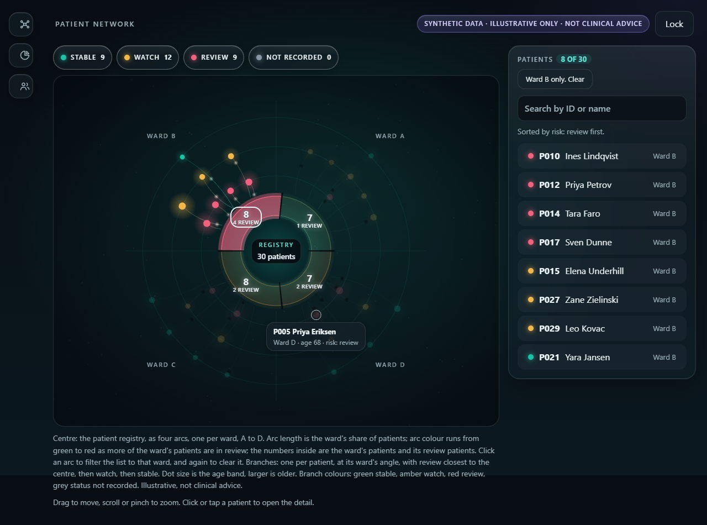
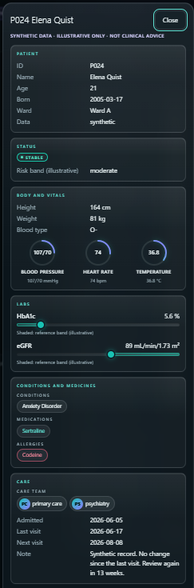
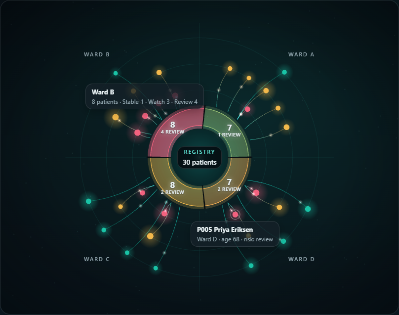
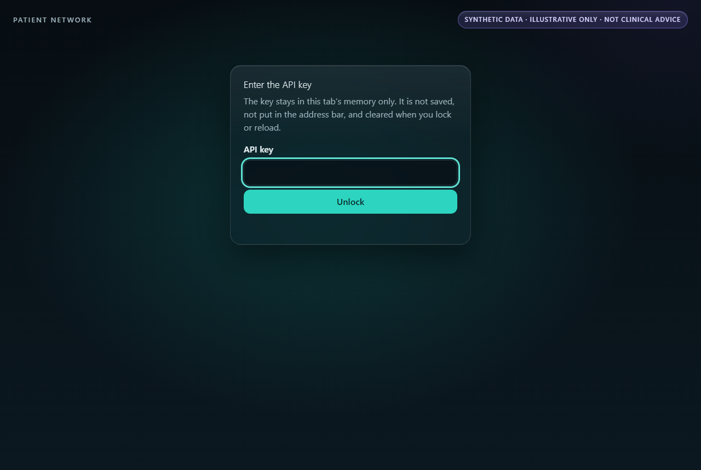
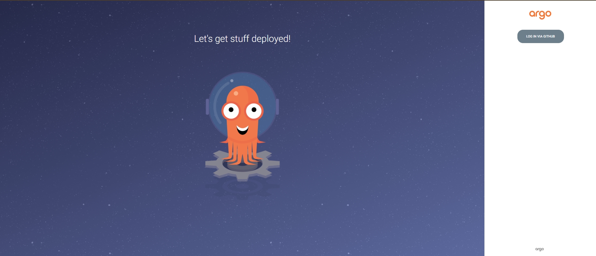
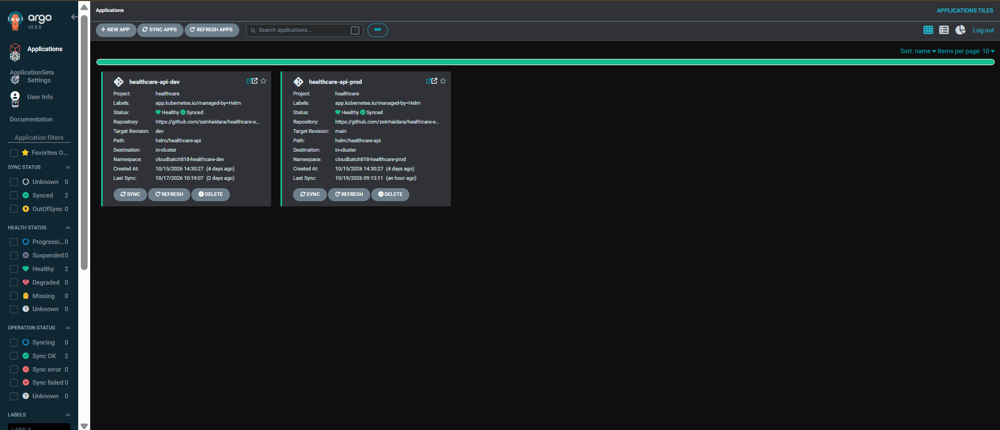
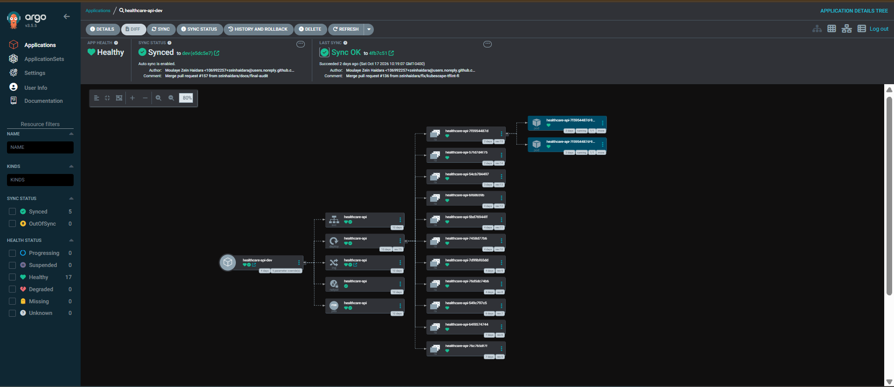

Small app, serious perimeter.
A FastAPI service serves synthetic patient records from DynamoDB behind an API key. It runs on EKS Fargate with no nodes, a read-only filesystem, a non-root user, and a base image pinned by digest.
Read-only patient lookup API on EKS Fargate delivered through scan-gated CI, Argo CD GitOps, approval-gated Terraform and OIDC-only access, with a logged controls and exceptions register.
mainA FastAPI service serves synthetic patient records from DynamoDB behind an API key. It runs on EKS Fargate with no nodes, a read-only filesystem, a non-root user, and a base image pinned by digest.
A merge to dev builds, scans and pushes one image, then commits its digest to Git. Argo CD syncs dev automatically; prod syncs only when an admin approves. No pipeline touches the cluster.
Every control is listed with a status and the scan, run or check that proves it. Data is synthetic and no compliance claim is made. Controls are described as HIPAA-aligned, never compliant.
Everything in us-east-2, in two root Terraform stacks: the platform, then the cluster add-ons.
Every pull request runs tests and lint, Trivy on dependencies and the built image, Checkov on Terraform, the Dockerfile and workflows, CodeQL, SonarCloud, and gitleaks over full history. main requires ten of these. All actions are pinned by commit SHA and the PR token is read-only with no AWS access.
CD builds one image, scans it, pushes it by SHA to ECR and commits the tag and digest to dev. Argo CD tracks Git and has no AWS role. The AppProject limits it to one repo, two namespaces and no cluster-scoped objects. Rollback is a Git revert.
Infrastructure runs only by manual dispatch with no inputs: a read-only plan, a guard that fails closed on any delete or replace of a bucket, KMS key or table, then an apply of the exact saved plan behind an infra approval. Add-ons are a second root with their own plan and apply.
No stored AWS keys: one OIDC role per purpose. The cluster uses access entries only, with no creator admin. Pods get IRSA roles scoped to one table, one secret and one key. The API key rotates every 30 days through a Lambda, and External Secrets reads only two secrets.
CloudTrail with log file validation, VPC flow logs, GuardDuty with EKS audit and S3 data events, and Security Hub on the foundational standard. Prowler findings were triaged into fixes or registered exceptions, and ZAP runs weekly against dev.
Pick a change and push it through the pipeline. The gates and their rules are the real ones from the repo; the changes are simulated.
Choose a change above to start.
The simulator above mirrors these two workflows. Every job is a required or report-only check from the controls register.

ci.yml on the release merge to main: 15 jobs green in 1m 24s. Tests and lint, Trivy, Checkov, CodeQL, SonarCloud, gitleaks, tflint, Kubescape, pip-audit, and the image build and scan.
terraform-apply, started by hand: read-only plan, then apply and both add-on jobs, each behind an approval on the infra environment.A small front end on the API: unlock with the API key, then explore 30 synthetic patients by ward and risk. Captured from the running AWS deployment, October 2026. The stack was torn down on 20 October 2026.






dev branch, prod tracks main. Both Healthy and Synced.
A sample from the controls register. Each row maps to a SEC entry and saved scan output in the repo.
| Control | Status | Proof |
|---|---|---|
| Secrets out of Git | LIVE | gitleaks over full history on every PR; Trivy secret scan (SEC-000, SEC-012) |
| Image supply chain | LIVE | Base image pinned by digest; the scanned image is the one pushed; ECR tags immutable (SEC-030, SEC-031) |
| No stored AWS keys | LIVE | OIDC role per purpose in cd.yml and Terraform workflows (SEC-011) |
| Destructive plan guard | LIVE | Fails closed on bucket, key or table delete; not yet seen blocking a real plan (SEC-037) |
| Pod isolation | LIVE | Per-namespace pod security groups verified on dev and prod ENIs (SEC-032) |
| Branch rulesets | MANUAL | Set by hand in GitHub, documented in the bootstrap guide (SEC-009, EXC-003) |
| Public EKS endpoint | ACCEPTED | Needed for hosted runners; exception EXC-005 with a stated fix: private endpoint and a self-hosted runner |
The first passive scan found one Medium and five Low issues. Security headers were added in the app middleware and the scan re-run.
| Risk | Before headers | After |
|---|---|---|
| High | 0 | 0 |
| Medium | 1 | 0 |
| Low | 5 | 1 |
| Informational | 4 | 4 |